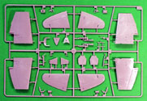
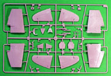
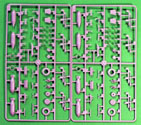
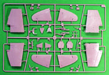

{kind=link}
{kind=link}
{kind=link}
 

{kind=link}
You may click on these small images to view larger pictures
Trumpeter 1/48 Wyvern S.4
Kit #2820
MSRP $54.95
Images and text Copyright © 2006 by Matt Swan
Developmental Background
Designed in 1944 the Westland Wyvern represented the end of the line in more ways than one. It was the last of the propeller driven fighters to be put into service by the Royal Navy and was the last fixed wing aircraft built by Westland before they shifted all production over to rotary wing aircraft. The Wyvern design attempted to take into account many different things learned from the previous year’s operations of propeller driven fighter aircraft. The power plant accommodations would accept a mid mounted Rolls-Royce 24 piston Eagle engine or a turboprop engine. While it was not a completely closed nose design the forward sweep of the nose cowling gave the pilot an excellent forward view eliminating one of the previous issues with single engine propeller driven aircraft. As it was intended to be used on carriers it was fitted with large landing flaps and included folding wings. Due to space limitations on an aircraft carrier it was also intended to act as a multi-role aircraft able to carry bombs, rockets, mines or torpedoes.
While the prototype Wyvern included the Eagle engine it was quickly replaced with the Rolls-Royce Clyde twin spooled turboprop unit that showed great promise. This new engine drove a six blade contra rotating propeller and could produce 4030 hp. This prototype was flown in 1945 but production was cancelled when Rolls-Royce refused to build the Clyde engine in favor of developing jet engines. An Armstrong Siddeley Python engine was tested in the aircraft in 1949 but suffered from slow response time, lower power levels and unreliability. By this time the original Eagle engine was no longer available so Westland was basically stuck with the Python engine. Twenty aircraft were built with this power plant and began carrier trials in 1950.
A series of small modification to the aircraft were made externally and internally an ejection seat was included. The final production version of the Wyvern, the S.4 finally entered service with the RN in 1953 and equipped three squadrons. They remained in service until 1958 and a few saw actual combat in the Suez Campaign in 1956. Only 127 aircraft were ever built and two of those were lost to enemy action. The Wyvern had about the same weight of a DC-3 and twice the power of a P-47. It’s interesting to take note of the fact that this aircraft type took nearly ten years to develop yet only stayed in service for barley five years. The last surviving example of the Wyvern resides at the Fleet Air Arms Museum in Yeovilton, England.
The Kit
This kit arrives in a very sturdy medium duty cardboard box with nearly every sprue individually packaged inside a poly bag. The kit includes a fret of photo etched parts along with a hexagon steel propeller shaft pin and a sprue of higher density plastic pieces for a working contra-rotating propeller. I don’t think anybody has been able to pull this trick off before. The high pressure injection molded pieces display a level of engineering quality on par with things we would expect from Tamiya. Panel lines are crisp and consistent combined with delicate rivet details, there is no readily visible flash on any parts, there are no sink marks on the parts and interior injector pin markings are minimal.
Cockpit interior details are relatively good with the weakest point probably being the ejection seat. Since the basic interior color is black most of this stuff will be difficult to see when completed. The kit includes bombs, rockets, torpedo and drop tanks as well as RATOG packs. The kit can be built with flaps extended or retracted and wings folded or fixed. The kit contains six primary parts sprues that consist of two hundred fourteen parts along with a single sprue of high density plastic gearing containing four pieces. Now these pieces do actually allow for a working contra rotating propeller but the gear ratio is not correct. The aft propeller only turns at half speed of the front propeller but its still a neat effect and good for positioning the blades. They are not suitable for adding an electric motor as it would most likely strip the gears very quickly however if some bright boy should come up with a set of metal replacements that could be interesting.
The kit also include a small sprue of clear parts that display good clarity and well defined raised frame lines. The front wind screen is of the flat type such as found on later model Wyverns. The canopy can be modeled in the open or closed position. Wing tip marker lights, camera lenses and landing light are included here as well. We get a total of nine clear parts. The single small photo etched fret covers the seat belts and instrument panel. There is also a small acetate sheet for the instrument details. Including the steel hexagon propeller shaft this kit contains a total of two hundred thirty three parts.


You may click on these small images to view larger pictures
Decals and instructions
Trumpeter has provided a nicely done CAD designed set of instructions for this kit that begin with a black and white profile of the S.4 and basic modeling safety warnings. The instructions include a complete parts map but no color chart. Thirteen pages are covered with exploded view construction steps that include plenty of color call-outs by color name and by Gunze-Sangyo Mr. Color codes. The last page of the instruction booklet includes an external stores map for three different primary load-outs. In addition to the instruction booklet there is an A3 sized color glossy sheet covering decal placement and exterior painting schemes for three aircraft.
The decal sheet for this kit is large and comprehensive. You may click on the image to the right to view a full sized scan of the decals. The sheet is divided into four sections, a set of standard service stencils and warning markings that are common to all Wyvern S.4s along with the individual markings for three separate aircraft. Also we have the black and yellow strips provided as decals for the strip challenged modeler. Print registry on the decals looks spot on with excellent color density. Previous experience with Trumpeter decals indicates they behave well with all standard decal setting solutions.
Conclusions
The Chinese government made a loan of five million dollars to the Trumpeter company to help them become a leading force in the plastic modeling industry and Trumpeter is making good use of that money. This is not the first time the Wyvern has been presented to the modeling community, previously there have been two vacuform kits followed by a relatively nice offering from Classic Airframes but this time I think we have one of the best possible kits available to us. Detail wise this kit provides a very nice level of detail other than the ejection seat which could be replaced with either the Classic Airframes Canberra seat or a Martin Baker Mk. 2 seat from Aeroclub. The working contra-rotating propeller is a cool touch but the propeller blades themselves are too fat – something easily remedied. Structurally speaking the only perceived weak point on this model is the folding wing joint, it seems the wings may be susceptible to easy breakage.
Even though this is a new kit on the market there are a few aftermarket items already available like a set of decals from Cutting Edge that also include the strips, mask sets from CE and Eduard and a Goffy Models cockpit set that was originally intended for the Classic Airframes kit but could be converted for use here. Pavla, Cutting Edge and Aeroclub all make a Martin Baker Mk.2 ejection seat that could benefit the model. Overall this is a great kit with great engineering and I highly recommend it.


{kind=link}
{kind=link}
{kind=link}
{kind=link}